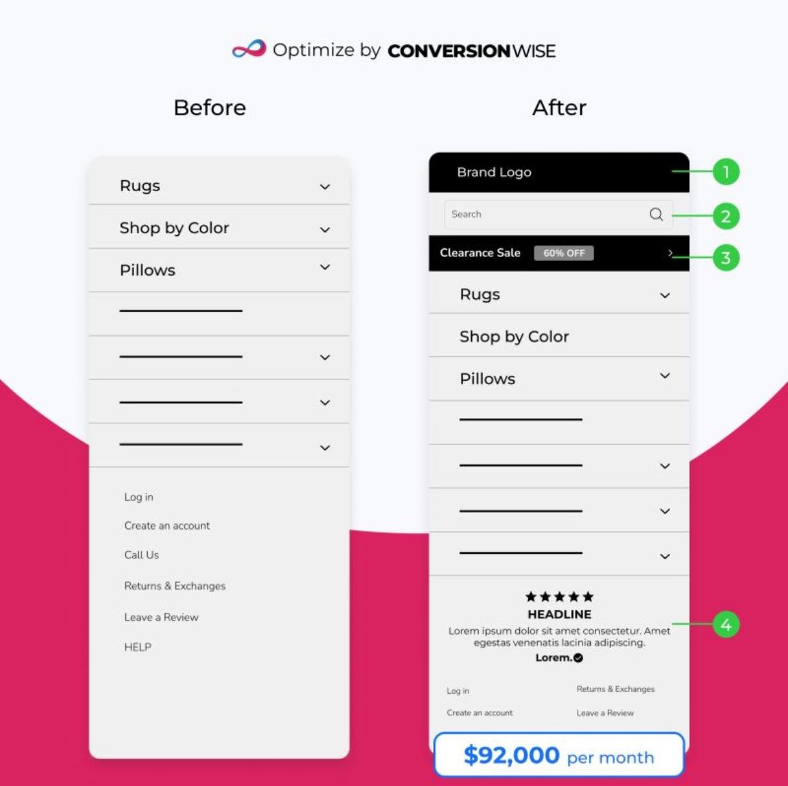
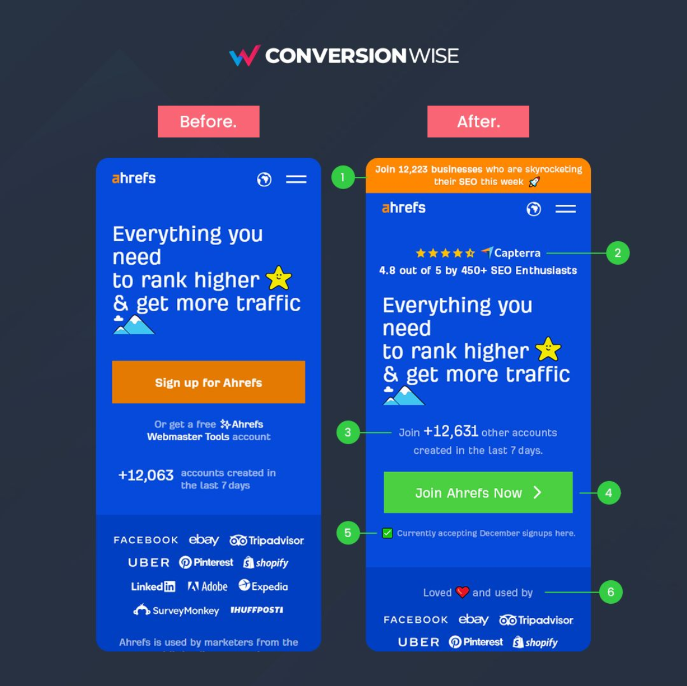

Real LinkedIn before/after CRO creatives
Captured from public LinkedIn post pages of the accounts this strategy references. This is the format in the wild, what each example does, and what our cards take from it.
Fabian Gmeindl / DRIP Agency · SNOCKS checkout test

Anatomy: dark textured background, agency logo top center, two phone screenshots, Control and Variation pills below (variation colored), purple box on the changed element, result as a small circular badge. The numbers and story live in the post text. Note: a LOSING test, and one of his best performing posts.
Samuel Hess · SNOCKS product title test

Anatomy: bright single color background, brand logo top, full iPhone device frames, orange boxes highlighting the same element on both screens. No result number on the image: the outcome is the payoff for reading the post.
Oliver Kenyon / ConversionWise · menu redesign, +$92,000 per month

Anatomy: Before and After headers, agency logo top, numbered green markers (1 to 4) pinned to each change on the After side, each number explained in the post text, and the revenue result as a badge pinned to the After mockup. The numbered marker system is what makes multi change redesigns readable.
Oliver Kenyon / ConversionWise · Ahrefs above the fold

Anatomy: dark navy background, pink Before. and After. labels, six numbered markers on the After screenshot only. No revenue claim at all: it's a spec redesign used to demonstrate method, proof that the format also works without a result number.
How the text and creative divide the work

The pattern behind all of them: the post text carries the hook, the numbers and the lesson (plus a comment gate CTA like "repost and I’ll share 30 tests"), while the image only shows the two variants and where to look. Text sells, image shows.
The shared anatomy (all four creatives)
- Agency or brand logo top center, always. The creative doubles as a branded asset when reshared.
- Two phone framed screenshots side by side with Before/After or Control/Variation labels.
- A colored pointer at the change: one box when one thing changed (Gmeindl, Hess), numbered markers when several did (Kenyon).
- Result number optional: small badge on image (Gmeindl, Kenyon menu) or absent to force the read (Hess, Kenyon Ahrefs). Never a wall of stats on the image.
- Bold flat background in brand colors, dark textured, bright blue, navy, or light with a brand color block.
What our v2 cards do with this
- Already matched: highlight box on the change, labels, logo attribution, tight screenshots, numbers in the text layer kept to one.
- To adopt: highlight the element on BOTH panels (Hess), and use Kenyon style numbered markers for multi change tests like the PH Import homepage rework (4 changes).
- Deliberate difference: our result cards keep one big number on the image as the scroll stopper; our guess posts use the Hess pattern (no number, curiosity drives comments). Both exist in the wild.
Where to browse more (logged in)
- Marin Istvanic · ad creative splits and testing frameworks
- Samuel Hess · runs a numbered "A/B Test [brand]" series (SNOCKS, Foodspring)
- Fabian Gmeindl · DRIP Agency test stories
- Oliver Kenyon · ConversionWise before/afters, "CRO Case Study #N" and "Optimization by Oliver #N" series
- LinkedIn content search: before after CRO A/B test